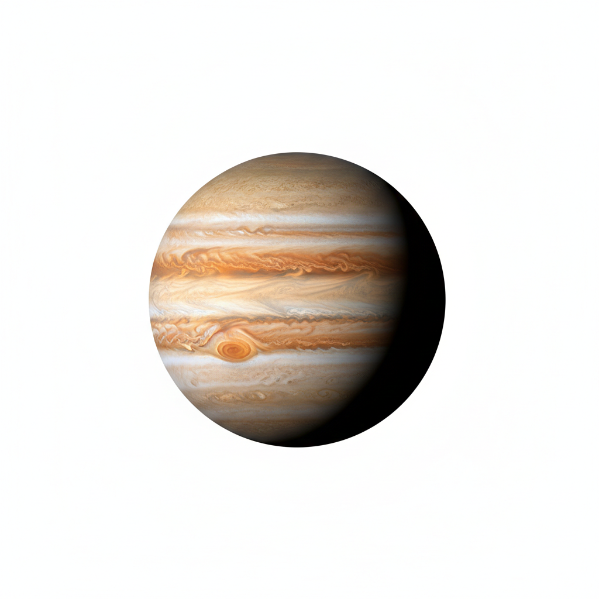

Júpiter é o maior planeta do Sistema Solar, tanto em diâmetro quanto em massa, sendo o quinto planeta a partir do Sol. Com um diâmetro equatorial de aproximadamente 142.984 km, é cerca de 11 vezes maior que a Terra, e sua massa é 318 vezes maior que a da Terra — equivalente a mais do que o dobro da massa de todos os outros planetas juntos.
É um planeta gasoso, classificado como um dos gigantes gasosos, junto com Saturno, Urano e Netuno. Sua composição principal é hidrogênio (cerca de 86%) e hélio (cerca de 14%), com traços de metano, amônia, vapor de água e outros compostos.